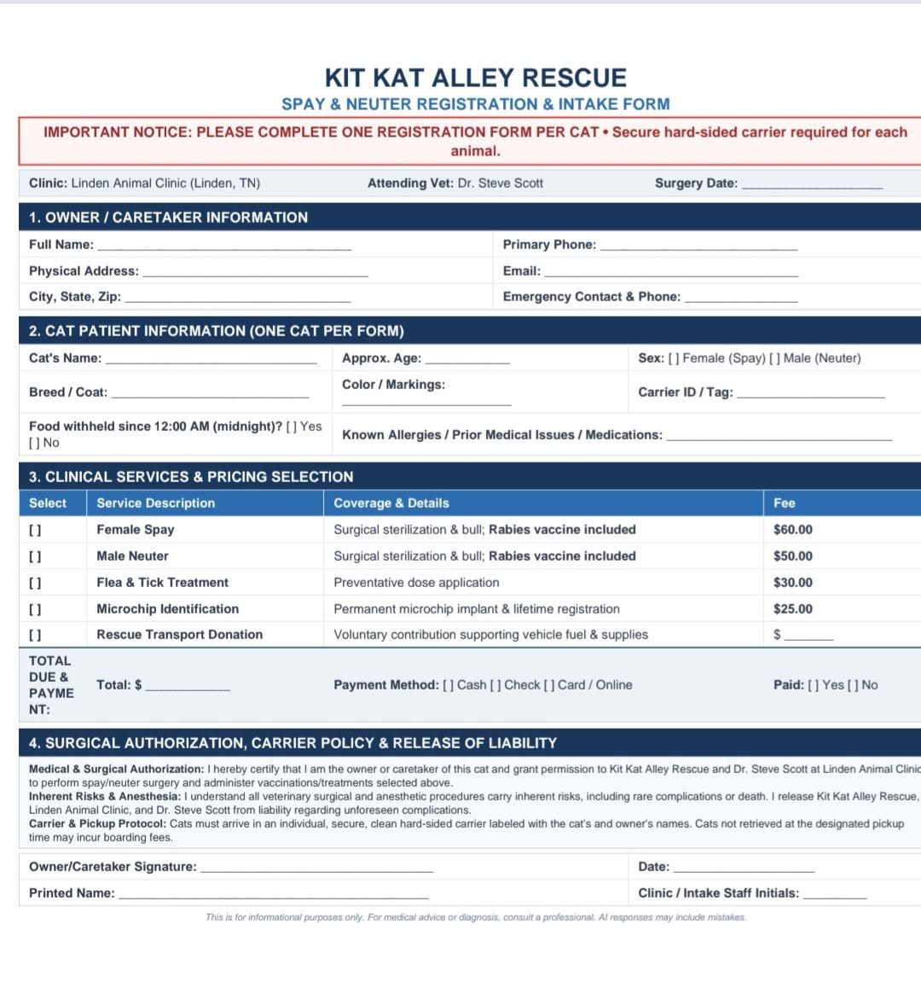

Booking is closed for October 14
We will message through Facebook next week with registration information for the next clinic. Stay tuned. Please donate today so the spay and neuter program can keep going.
Wednesday, October 14, 2026 clinic
15 spots were opened with Kit Kat Alley Rescue and Linden Animal Clinic. Those spots are now full. Copays go directly to the clinic. The rescue covers rabies vaccines, transport, and additional care.
Female cat copay
$60, paid to the clinic.
Male cat copay
$50, paid to the clinic.
What the rescue covers
Rabies vaccines, transport, and additional care.
Lewis County
Drop-off 7:00 AM sharp at Tractor Supply Co., 608 E Main St, Hohenwald, TN, for transport. Pickup 2:00 PM at the same location.
Perry County
Drop-off 8:00 AM sharp at Linden Animal Clinic. Pickup 12:00 PM at the clinic.
Now boarding
This is the October 14 roster. Spot 20 is emergency only. Pickup is back at the designated location.
- Ruth Murdock — female
- Ruth Murdock — female
- Olivia Barrios — male
- Stephanie Leigh
- Kit Kat Alley Rescue — female
- Bridgette Crumley — male
- Jami Bailey Long — female
- Whitney C Morrow — female
- Whitney C Marrow — male
- Dee Bee — female
- Dee Bee — female
- Dee Bee — female
- Dee Bee — female
- Dee Bee — female
- Dee Bee — female
- Kaylyn Elizabeth Morrow — male
- Kaylyn Elizabeth Morrow — male
- Amy Lomax Renfroe — female
- Amy Lomax Renfroe — female
- Emergency appointment only

Spots are limited. Only reserve a future spot if you are committed to attending. Cats must be healthy enough for surgery. Bring a clean carrier. The rescue has 26 cat carriers and 4 medium traps available to rent. Cats must not stay in a carrier or trap longer than 24 hours.
Get on the list for the next clinic
October 14 is closed. This form opens an email to kitkatalleyrescue@yahoo.com with your details already filled in. Send it, and we will use it when Facebook registration opens next week.